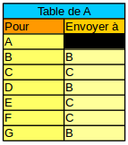

Définition (Routage) : Le routage permet de transmettre des données d'un ordinateur A situé dans un sous réseau R1 vers un ordinateur B situé dans un autre sous réseau R2. Les données encapsulées sont transmises de routeurs en routeurs pour passer d'un sous réseau à un autre.
Définition (Routeur) :
Un routeur est un matériel réseau spécifique, conçu
spécialement pour le routage. Ces routeurs sont des machines informatiques
qui utilisent des tables de routage, afin de transmettre les données d'un sous-réseau vers un autre.
Ces routeurs disposent de plusieurs cartes réseaux et donc de plusieurs adresses MAC.
On leur attribue aussi plusieurs adresses IP pour pouvoir être raccordés
à chacun des sous-réseau avec lesquels ils échangent des données.
Définition (Table de routage) :
Une table de routage est un tableau qui indique pour un routeur A recevant un paquet à destination d'un autre routeur qui n'est pas dans son voisinage, vers quel routeur de son voisinage il doit envoyer ce paquet.
Par exemple, on a ci-dessous la table de routage du routeur A.

Ainsi si le routeur A reçoit un paquet à destibation du routeur F qui n'est pas dans son voisinage,
il va l'envoyer au routeur C qui est dans son voisinage.
Si le routeur A reçoit un paquet à destination du routeur G qui n'est pas dans son voisinage,
il va l'envoyer au routeur B qui est dans son voisinage.
Définition (Algorithme de routage) :
Les tables de routage sont recalculées régulièrement à l'aide d'algorithmes de routage. Ce système est très souple, car si un routeur tombe en panne ou qu'une connexion entre deux routeurs ne fonctionne plus, les tables de routage se mettent à jour automatiquement grâce aux algorithmes de routages et cela permet de trouver de nouveaux chemins pour acheminer le paquet.
Définition (Passerelle) :
Une passerelle (en anglais, gateway) est le nom générique d'un dispositif permettant de relier deux réseaux informatiques. Une passerelle est souvent un routeur et cela permet à deux ordinateurs situés
dans deux sous-réseaux différents de communiquer.
Définition (Passerelle par défaut) :
La passerelle par défaut, c’est l’adresse IP du routeur vers lequel on va transmettre des données pour un destinataire hors de son sous-réseau.